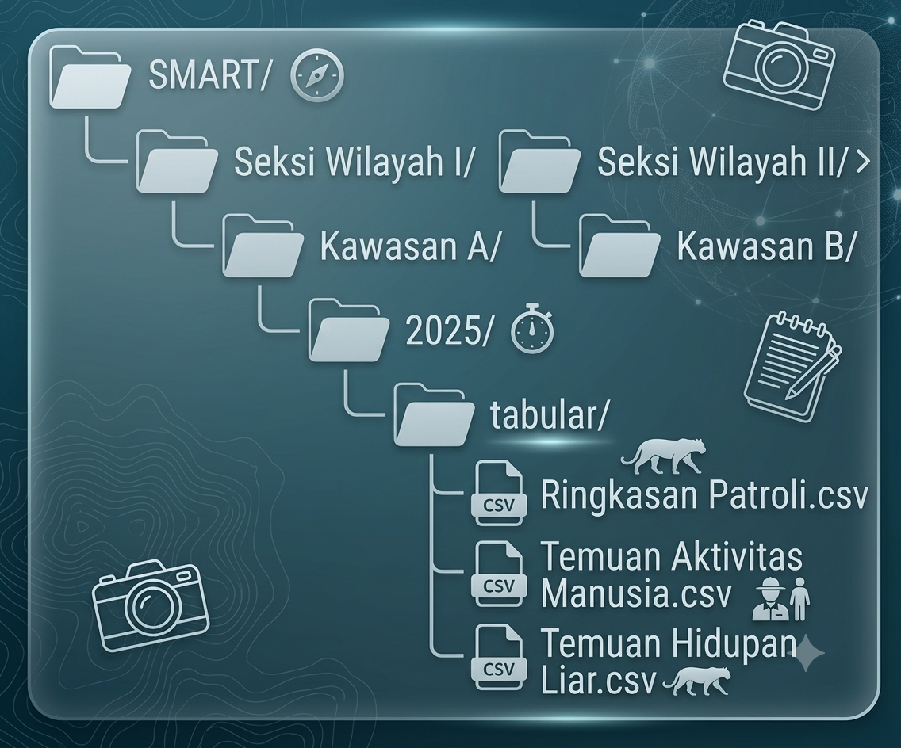

SMART Patrol Data Processing Pipeline
A Standardized Workflow for Conservation Area Monitoring Data
Abstract
This document presents a reproducible analytical pipeline for processing SMART (Spatial Monitoring and Reporting Tool) patrol data from conservation areas. The workflow automates data cleaning, spatial processing, and hierarchical distribution of monitoring data. The pipeline processes three primary data categories: patrol summaries, human activity threats, and wildlife observations. Outputs are systematically organized by administrative regions, conservation sites, and temporal sessions, facilitating downstream analysis and reporting.
Introduction
Background
Systematic biodiversity monitoring is essential for assessing protected area management effectiveness and detecting emerging threats (Hockings et al. (2015)). The Spatial Monitoring and Reporting Tool (SMART) has become a global standard for patrolling and data management in conservation areas (Stokes (2010)). SMART integrates spatial data collection with structured reporting, enabling rangers to document wildlife observations, human activities, and patrol efforts systematically across diverse conservation landscapes.
Purpose of This Pipeline
- Standardize Data Processing: Automate cleaning and transformation of raw SMART export files into analysis-ready formats
- Integrate Spatial Data: Process patrol track shapefile to calculate spatial metrics including patrol distances
- Hierarchical Organization: Distribute processed data into region → site → session directory structures based on existing data attributes
- Ensure Reproducibility: Provide fully documented code with automated dependency management
- Facilitate Reporting: Generate structured outputs compatible with conservation reporting frameworks
Data Types Processed
The pipeline handles three primary data categories derived from SMART patrol operations:
| Data Category | Description | Key Variables |
|---|---|---|
| Patrol Summary | Spatial tracks and patrol effort metrics | Distance, patrol duration, team composition, transport mode |
| Threat Records | Human activity observations | Threat type, quantity, status, coordinates |
| Biodiversity Records | Wildlife and flora observations | Species identification (local and scientific names), counts, condition |
System Requirements and Setup
Software Requirements
The pipeline requires the following software environment:
- R Version: 4.0 or higher (R Core Team, 2024)
- RStudio: Recommended for script execution and development
- RTools (Windows): Required for compiling spatial packages
- Operating System: Windows 10/11, macOS, or Linux
Directory Structure
The pipeline follows a standardized directory structure that separates raw data, analysis scripts, and outputs:
Directory Components
| Component | Path | Purpose |
|---|---|---|
| **Input Database** | `1_Database/SMART/All Observation/` | Raw SMART CSV and shapefile exports |
| **Analysis Scripts** | `2_Analysis/01_Data_generate/` | Main execution and function scripts |
| **Source Functions** | `code/source/` | Core helper functions for data processing |
| **Output Data** | `data/` & `output/` | Processed results and intermediate files |
| **Documentation** | `*.qmd` | Reproducible workflow documentation |
Required R Packages
The pipeline depends on several R packages for data manipulation, spatial analysis, and date/time processing (Wickham et al., 2019; Pebesma, 2018; Grolemund & Wickham, 2011).
Core Packages
Code
packages_table <- data.frame(
Package = c("dplyr", "sf", "lubridate", "readr", "janitor", "hms", "tidyr", "purrr"),
Version = sapply(c("dplyr", "sf", "lubridate", "readr", "janitor", "hms", "tidyr", "purrr"),
function(pkg) as.character(packageVersion(pkg))),
Purpose = c(
"Data manipulation and transformation",
"Spatial data handling and shapefile processing",
"Date and time parsing and arithmetic",
"Efficient CSV reading and writing",
"Column name cleaning and data validation",
"Time format handling (HH:MM:SS)",
"Data reshaping and tidying",
"Functional programming and iteration"
)
)
kable(packages_table, caption = "Core R packages used in the pipeline",
booktabs = TRUE, format = "markdown")| Package | Version | Purpose | |
|---|---|---|---|
| dplyr | dplyr | 1.2.1 | Data manipulation and transformation |
| sf | sf | 1.1.1 | Spatial data handling and shapefile processing |
| lubridate | lubridate | 1.9.5 | Date and time parsing and arithmetic |
| readr | readr | 2.2.0 | Efficient CSV reading and writing |
| janitor | janitor | 2.2.1 | Column name cleaning and data validation |
| hms | hms | 1.1.4 | Time format handling (HH:MM:SS) |
| tidyr | tidyr | 1.3.2 | Data reshaping and tidying |
| purrr | purrr | 1.2.2 | Functional programming and iteration |
Installation Verification
Run the following code to verify all required packages are properly installed:
Code
library(dplyr, quietly = TRUE, warn.conflicts = FALSE)
library(sf, quietly = TRUE, warn.conflicts = FALSE)
library(lubridate, quietly = TRUE, warn.conflicts = FALSE)
library(readr, quietly = TRUE, warn.conflicts = FALSE)
library(janitor, quietly = TRUE, warn.conflicts = FALSE)
library(hms, quietly = TRUE, warn.conflicts = FALSE)
# List required packages
required_pkgs <- c("dplyr", "sf", "lubridate", "readr", "janitor", "hms")
# Check installation status
installed_status <- sapply(required_pkgs, function(pkg) {
if (require(pkg, character.only = TRUE, quietly = TRUE, warn.conflicts = FALSE)) {
"✓ Installed"
} else {
"✗ Missing"
}
})
# Create output table
result_df <- data.frame(
Package = required_pkgs,
Status = installed_status
)
# Print as markdown table
kable(result_df, caption = "Package Installation Status", booktabs = TRUE)| Package | Status | |
|---|---|---|
| dplyr | dplyr | ✓ Installed |
| sf | sf | ✓ Installed |
| lubridate | lubridate | ✓ Installed |
| readr | readr | ✓ Installed |
| janitor | janitor | ✓ Installed |
| hms | hms | ✓ Installed |
Function Reference
Core Functions Overview
The pipeline implements three main functional modules: data cleaning, spatial processing, and data distribution. Table Table 1 summarizes the core functions.
| Function | Input | Output | Purpose |
|---|---|---|---|
| clean_patrol_summary() | Shapefile path, landscape name | Cleaned data frame with distance metrics | Process patrol track shapefile and calculate distances |
| summary_patrol_data() | Patrol summary data frame, output path | CSV files organized by region/site/session | Distribute patrol summaries to hierarchical folders |
| threats_patrol_data() | Threats data frame, output path | CSV files organized by region/site/session | Distribute human activity threat records |
| ff_patrol_data() | Flora/fauna data frame, output path | CSV files organized by region/site/session | Distribute wildlife and flora observations |
Data Cleaning Function
clean_patrol_summary() This function processes raw SMART patrol shapefiles, calculating spatial metrics and standardizing attributes.
Function Signature:
Code
clean_patrol_summary(file_path, landscape)Arguments:
| Argument | Type | Description |
|---|---|---|
file_path |
Character | Full path to the .shp shapefile |
landscape |
Character | Landscape name (e.g., “BKSDA Kalimantan Barat”) |
Return Value: A data frame with cleaned patrol summary data containing:
- All original attributes (converted to lowercase)
- distance_m: Patrol distance in meters (rounded to 2 decimals)
- distance_km: Patrol distance in kilometers (rounded to 2 decimals)
Processing Steps:
- Validation: Checks file existence and readable format
- Spatial Reading: Imports shapefile using sf::st_read()
- Distance Calculation: Computes line lengths using st_length()
- Column Management: Drops unnecessary columns (Patrol_L_1, Patrol_L_2, Armed, Patrol_Leg)
- Format Conversion: Converts spatial object to standard data frame
- Standardization: Converts all column names to lowercase
Computational Note: The function assumes the shapefile uses a projected coordinate system with units in meters. For geographic coordinate systems (WGS84), st_length() returns great-circle distances in meters (Karney, 2013).
Data Distribution Functions
Hierarchical Organization Principle
All distribution functions implement a consistent hierarchical folder structure based on administrative geography:

summary_patrol_data() Distributes patrol summary data to hierarchical folders.
Function Signature:
Code
summary_patrol_data(patrol.summary, nationaldb_smart, tabular_type = "tabular")The files are stored in: D:/0_DataCentre/1_Database/SMART/Seksi Wilayah I/Kawasan A/2025/tabular/Ringkasan Patroli.csv The files are stored in: D:/0_DataCentre/1_Database/SMART/Seksi Wilayah I/Kawasan A/2026/tabular/Ringkasan Patroli.csv The files are stored in: D:/0_DataCentre/1_Database/SMART/Seksi Wilayah II/Kawasan B/2024/tabular/Ringkasan Patroli.csv threats_patrol_data() Distributes human activity threat records following the same hierarchical structure.
ff_patrol_data() Distributes wildlife and flora observation records.
Execution Workflow
Pipeline Initialization
The complete pipeline is executed by running the main script 00_smart_data_generate.R. The workflow proceeds through eight sequential phases.
Code
# Workflow diagram (placeholder)
# Uncomment and add actual image:
knitr::include_graphics("images/workflow_diagram.png", error = FALSE)
Phase 1: Environment Setup
The pipeline begins by clearing the workspace and ensuring all required packages are available (Wickham, 2014). This phase implements reproducible environment management.
Code
# Clear workspace
rm(list = ls())
# Define required packages
packages_needed <- c("dplyr", "tidyr", "janitor", "sp", "sf", "tidyverse",
"data.table", "utils", "lubridate", "readr", "mapview",
"ggplot2", "here", "fs", "readxl", "purrr", "hms")Scientific rationale: Reproducible research requires explicit environment configuration (Sandve et al., 2013). Clearing the workspace eliminates potential conflicts from previous analyses, while automated package installation ensures computational reproducibility across different systems.
Phase 2: Path Configuration
File paths are configured using relative paths from a user-defined base directory. This approach enhances portability across different computing environments.
Code
base_path <- "D:/0_Learning_DataR"
analysis <- file.path(base_path, "2_Analysis/01_Data_generate")
nationaldb <- file.path(base_path, "1_Database")
nationaldb_smart <- file.path(nationaldb, "SMART")Phase 3: Data Import
Raw SMART data are imported using read_csv() for tabular data and st_read() for spatial data.
Code
all.observation <- read_csv(
file.path(nationaldb, "SMART/All Observation/All_Observation.csv"),
show_col_types = FALSE
)Data provenance: The CSV export from SMART contains all observation records (n ≈ 3,385), including patrol metadata, threat observations, and biodiversity records. The shapefile contains patrol track geometries representing movement routes during patrol operations (Critchlow et al., 2015).
Phase 4: Data Cleaning
The cleaning phase standardizes column names, date formats, and time representations.
Code
all.observation <- all.observation %>%
clean_names() %>%
rename(kategori_temuan_0 = observation_category_0,
kategori_temuan_1 = observation_category_1) %>%
mutate(
landscape = "BKSDA Kalimantan Barat",
patrol_start_date = lubridate::mdy(patrol_start_date),
patrol_end_date = lubridate::mdy(patrol_end_date),
waypoint_date = lubridate::mdy(waypoint_date),
waypoint_time_final = as_hms(parse_date_time(waypoint_time, orders = c("HM", "HMS")))
)Methodological note: Date parsing employs the month-day-year (MDY) order as this format is standard in SMART exports. The parse_date_time() function provides robust handling of heterogeneous time formats (Grolemund & Wickham, 2011).
Phase 5: Patrol Summary Processing
Patrol tracks are aggregated to calculate total distances per patrol mission.
Code
CPS <- clean_patrol_summary(
file_path = file.path(nationaldb, "SMART/All Observation/All_track.shp"),
landscape = "BKSDA Kalimantan Barat"
)
patrol.summary <- CPS %>%
mutate(patrol_days = as.numeric(patrol_end_date - patrol_start_date + 1)) %>%
group_by(patrol_id) %>%
reframe(
distance_m = sum(distance_m, na.rm = TRUE),
distance_km = sum(distance_km, na.rm = TRUE),
patrol_days = first(patrol_days),
across(everything(), first)
)Spatial analysis: Total patrol distance is calculated as the sum of individual track segment lengths. This metric serves as a proxy for patrol effort, which is positively associated with detection probability of threats and wildlife (Moore et al., 2018).
Phase 6: Administrative Classification
Patrol data are classified into hierarchical administrative units for reporting.
Code
patrol.summary <- patrol.summary %>%
mutate(site = case_when(
station %in% c("Resort 1 Kawasan A", "Resort 2 Kawasan A") ~ "Kawasan A",
station == "Resort 1 Kawasan B" ~ "Kawasan B" ,
# lanjutkan jika masih ada yang belum
TRUE ~ station)) %>%
mutate(region = case_when(
site %in% c("Kawasan A") ~ "Seksi Wilayah I",
site %in% c("Kawasan B") ~ "Seksi Wilayah II",
# Tambahkan seksi lainnya
TRUE ~ site
)) Administrative hierarchy: The management hierarchy pertains to the administration of a specific region in accordance with an institution’s organizational framework for regional management (e.g., the Regional Management Section). Administrative structures: Seksi Wilayah (section offices) and individual conservation sites (Cagar Alam, Taman Wisata Alam, Hutan Desa). This classification aligns with Indonesia’s conservation area management framework (Minister of Environment and Forestry Regulation No. P.76/Menlhk/Setjen/Kum.1/10/2015).
Phase 7: Temporal Classification
Temporal variables enable seasonal and trend analysis.
Code
patrol.summary <- patrol.summary %>%
mutate(session = year(patrol_start_date),
month = month(patrol_start_date),
semester = ifelse(month %in% 1:6, 1, 2),
quarter = case_when(
month %in% 1:3 ~ 1,
month %in% 4:6 ~ 2,
month %in% 7:9 ~ 3,
month %in% 10:12 ~ 4,
TRUE ~ NA_integer_
))Rationale: Temporal classification facilitates analysis of seasonal patterns in patrol effort, threat occurrence, and wildlife observations. Quarterly and semester aggregations align with standard conservation reporting cycles (Hockings et al., 2015).
Phase 8: Data Distribution
Processed data are exported to hierarchical folder structures.
Code
summary_patrol_data(patrol.summary, nationaldb_smart)
threats_patrol_data(patrol.threats, nationaldb_smart)
ff_patrol_data(patrol.fauna.flora, nationaldb_smart)Output Validation
Expected Output Structure

Validation Code
Run the following to verify successful execution:
Code
# Count exported CSV files
csv_files <- list.files(nationaldb_smart, pattern = "\\.csv$",
recursive = TRUE, full.names = TRUE)
cat("Total CSV files exported:", length(csv_files), "\n")Total CSV files exported: 7 Code
# Check directory structure
dirs <- list.dirs(nationaldb_smart, recursive = TRUE, full.names = FALSE)
cat("\nDirectories created:\n")
Directories created:Code
print(dirs) [1] ""
[2] "All Observation"
[3] "Seksi Wilayah I"
[4] "Seksi Wilayah I/Kawasan A"
[5] "Seksi Wilayah I/Kawasan A/2025"
[6] "Seksi Wilayah I/Kawasan A/2025/tabular"
[7] "Seksi Wilayah I/Kawasan A/2026"
[8] "Seksi Wilayah I/Kawasan A/2026/tabular"
[9] "Seksi Wilayah I/Kawasan A/NA"
[10] "Seksi Wilayah I/Kawasan A/NA/tabular"
[11] "Seksi Wilayah II"
[12] "Seksi Wilayah II/Kawasan B"
[13] "Seksi Wilayah II/Kawasan B/2024"
[14] "Seksi Wilayah II/Kawasan B/2024/tabular"
[15] "Seksi Wilayah II/Kawasan B/NA"
[16] "Seksi Wilayah II/Kawasan B/NA/tabular" Troubleshooting
Common Errors and Solutions
| Error | Cause | Solution |
|---|---|---|
^File not found^ |
Incorrect file path | Verify base_path variable matches your directory structure |
^cannot open connection^ |
File permission issue | Close any open instances of the CSV file (e.g., in Excel) |
^object 'current_tabular' not found^ |
Outdated function file | Update function 1_fn_smart_data.R` with the corrected version |
st_read error |
Corrupted or incomplete shapefile | Ensure all shapefile components (.shp, .shx, .dbf, .prj) are present |
| Date parsing NAs | Unexpected date format | Check raw data for non-standard date strings |
Debugging Mode
Code
# Enable verbose error messages
options(error = recover)
# Check data types after each major step
glimpse(all.observation)
str(patrol.summary)
# Identify problematic date values
all.observation %>%
filter(is.na(patrol_start_date)) %>%
select(patrol_start_date) %>%
distinct()Best Practices and Recommendations
Data Quality Assurance
- Regular Validation: Run validation scripts after each data import to detect formatting issues early
- Coordinate Reference System: Ensure shapefiles use a projected CRS (e.g., GCS WGS 84/decimal degree) for standardized data type (EPSG:4326 for standardized)
- Date Format Consistency: Maintain consistent MDY format in SMART configuration to minimize parsing errors
Performance Optimization
For large datasets (>10,000 records), consider these optimizations:
Code
# Use data.table for faster reading
library(data.table)
all.observation <- fread(file_path)
# Parallel processing for multiple files
library(future)
plan(multisession, workers = availableCores() - 1)Version History
| Version | Date | Changes |
|---|---|---|
| 2.0 | 2026-06-02 | Complete rewrite with hierarchical distribution |
| 1.0 | 2025-01-15 | Initial release for Fauna & Flora Indonesia Programme Kalimantan Barat |
Contact and Support
For technical support or questions regarding this pipeline, contact me:
- Email: jarian.work.1@gmail.com
- GitHub: https://github.com/HarimauSum4tra
- See also My Portfolio: https://harimausum4tra.github.io/02_JPR_Portfolio_main/
References
Hockings, M., F. Leverington, and C. Cook. 2015. “Protected Area Management Effectiveness.” Parks 21 (1): 7–18. https://doi.org/10.2305/IUCN.CH.2014.PARKS-21-1.MH.en.
Stokes, E. J. 2010. “Improving Effectiveness of Protection Efforts in Tiger Conservation Landscapes.” Integrative Zoology 5 (4): 323–30. https://doi.org/10.1111/j.1749-4877.2010.00218.x.